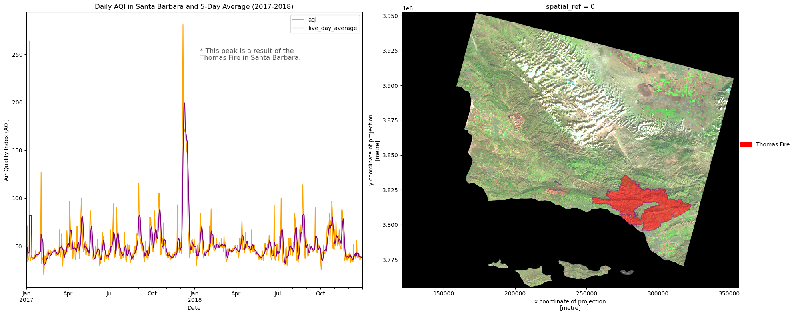

Analysis of Air Quality from Thomas Fire in Santa Barbara
Exploring the effect of the Thomas Fire on Air Quality in Santa Barbara in 2017.
Geospatial
Quarto
Python
MEDS
Author
Luna Herschenfeld-Catalán
Published
December 13, 2023
The Thomas Fire in 2017, image from NASA Modis Satellite.
Project background
In this blog I will investigate the Thomas Fire that occured in California in 2017. The Thomas Fire occured in 2017 and burned for over 40 days. The fire destroyed over 280,00 acres, destroyed 1,063 structures and resulted in one civilian and one firefighter fatality (VCFD, 2019). Understanding the impact on Air Quality is important for public health advisories, and planning public and emergency response when the next fire occurs.
I will create a time series graph to visualize the impact of the fire on the air quality index (AQI) of Santa Barbara County, and a false color image to understand the extent of the fire.
This analysis can be accessed at the repo here: Repository link
Highlights
Data wrangling and exploration using pandas
Geospatial analysis of false and true color images with geopandas and rioxarray
Creating visualizations to give context for AQI measures as a result of the Thomas Fire
A simplified collection of bands (red, green, blue, near-infrared and shortwave infrared) from the Landsat Collection 2 Level-2 atmosperically corrected surface reflectance data, collected by the Landsat 8 satellite.
# import librariesimport pandas as pdimport matplotlib.pyplot as pltimport os import numpy as nimport xarray as xrimport rioxarray as rioxrimport geopandas as gpdfrom shapely.geometry import boximport matplotlib.patches as mpatches # to create legends
Step 1: Import Data
We are using the AQI, Landsat, and California fire data:
Code
# upload aqi data using urlaqi_17 = pd.read_csv('https://aqs.epa.gov/aqsweb/airdata/daily_aqi_by_county_2017.zip')aqi_18 = pd.read_csv('https://aqs.epa.gov/aqsweb/airdata/daily_aqi_by_county_2018.zip')# make filepath for landsat datalandsat_fp = os.path.join(os.getcwd(),'data', "landsat8-2018-01-26-sb-simplified.nc")# open rasterlandsat = rioxr.open_rasterio(landsat_fp)# read in california fire shapefileca_fire = gpd.read_file(os.path.join(os.getcwd(),'data','California_Fire_Perimeters_2017','California_Fire_Perimeters_2017.shp'))
Step 2: Prepare AQI Data
Since we want to investigate the data from both of these dataframes, we want to join them as a list of data frames using the concat() method. We also want to update the column names since they are annoying to work with when they are all uppercase with spaces.
We can see that the dates now range from 2017 to 2018:
Code
# join two dataframes as a list of data framesaqi = pd.concat([aqi_17, aqi_18])# rename column names with lowercase and add _ between wordsaqi.columns = aqi.columns.str.lower().str.replace(' ','_')aqi
State Name
county Name
State Code
County Code
Date
AQI
Category
Defining Parameter
Defining Site
Number of Sites Reporting
0
Alabama
Baldwin
1
3
2017-01-01
21
Good
PM2.5
01-003-0010
1
1
Alabama
Baldwin
1
3
2017-01-04
22
Good
PM2.5
01-003-0010
1
2
Alabama
Baldwin
1
3
2017-01-10
19
Good
PM2.5
01-003-0010
1
3
Alabama
Baldwin
1
3
2017-01-13
30
Good
PM2.5
01-003-0010
1
4
Alabama
Baldwin
1
3
2017-01-16
16
Good
PM2.5
01-003-0010
1
...
...
...
...
...
...
...
...
...
...
...
327532
Wyoming
Weston
56
45
2018-12-27
36
Good
Ozone
56-045-0003
1
327533
Wyoming
Weston
56
45
2018-12-28
35
Good
Ozone
56-045-0003
1
327534
Wyoming
Weston
56
45
2018-12-29
35
Good
Ozone
56-045-0003
1
327535
Wyoming
Weston
56
45
2018-12-30
31
Good
Ozone
56-045-0003
1
327536
Wyoming
Weston
56
45
2018-12-31
35
Good
Ozone
56-045-0003
1
654338 rows × 10 columns
Step 3: Data Selection
Now that we have a clean dataframe, we want to be able to select AQI information for Santa Barbara. We also dont want a lot of the other county information since we are only interested in SB, so we can drop those columns.
Since we are interested in the AQI over time, we want to make sure that we can plot the time series correctly. To do that we want to check our data types to make sure that the date column is in the right format.
Code
# select only SB county and drop column namesaqi_sb = aqi[aqi.county_name =='Santa Barbara'].drop(['state_name', # drop these columns 'county_name', 'state_code', 'county_code'], axis =1)aqi_sb.dtypes
As we can see above, the date column is not in the correct format. Since we are interested in plotting this data as time series, we want to make sure that the date column is in datetime so that it can plot correctly.
You can see that the date is now in datetime format!
Code
# update date column to datetime typeaqi_sb['date'] = pd.to_datetime(aqi_sb['date'])aqi_sb.dtypes
In this step we are going to prepare the data for plotting by making calculating the 5 day average rolling mean to smooth the data and make it more understandable visually.
To make plotting easier, we will first det the date column as the index. Then, we want to create a new column with the new 5 day average mean.
Code
# set date as index for easy plottingaqi_sb = aqi_sb.set_index('date')# create new column with 5 day meanaqi_sb['five_day_average'] = aqi_sb.aqi.rolling('5D').mean()
Step 5: Prepare Landstat Data
First, we are going to investigate the raster layer to gain a sense of its dimensions and resolution.
Code
# look at landsat dataprint("bands:", landsat.band)print('spatial bounding box:')print(landsat.rio.bounds(), '\n')
Before we continue with the landat data, we are going to explore the California Fire data so that we can make any necessary updates to be able to plot the landsat and ca fire data together.
Step 6: Prepare CA Fire Data
First, we are going to compare the crs of the landsat and fire data to see if we have to make any updates. Since these datasets have difference crs, we are are going to reproject the ca_fire data to the landsat data.
We are only interested in mapping the Thomas fire that we have the AQI data for. In this next step, we want to only choose the Thomas fires from the california fire dataset. This will result in a single polygon:
Code
# select only the Thomas Firesthomas_fire = ca_fire[ca_fire.fire_name =='THOMAS']thomas_fire
index
objectid
year_
state
agency
unit_id
fire_name
inc_num
alarm_date
cont_date
...
gis_acres
comments
complex_na
complex_in
irwinid
fire_num
decades
shape_leng
shape_area
geometry
436
20274
41874
2017
CA
USF
VNC
THOMAS
00003583
2017-12-04
2018-01-12
...
281790.875
CONT_DATE based on Inciweb
NaN
NaN
NaN
NaN
2010
540531.887458
1.681106e+09
MULTIPOLYGON (((259241.263 3814482.913, 259193...
1 rows × 23 columns
Step 8: Putting Everything Together!
We need to make some final ppdates before we can map the fire and landsat data together.
We want to make it easy for viewers to understand what we are plotting. Selecting the bands below to create a flase color image of the landsat data will give us more information than a true color image.
Plot the true color image and see what comes out:
Code
# select bands from landsatlandsat[["red", "green", "blue"]].to_array().plot.imshow(robust =True)
<matplotlib.image.AxesImage at 0x7c7427afcfd0>
This shows us the ground, but it is not clear what we are looking at. Is it trees? Grass?
Now, try mapping the false color image by plotting the short-wave infrared (swir22), near-infrared, and red variables (in that order):
Code
# save false color image as an arraylandsat_false = landsat[["swir22","nir08", # plot nir layer"red"]].to_array()
Step 9: Visualize the AQI and Landsat/Fire Data
Create a map that shows a geographic context for the spike in the AQI data plot during the Thomas Fire.
Code
#---- Prepare Figure ----## plot the images in the same figurefig, (ax1, ax2) = plt.subplots(1, 2, # set them up next to eachother figsize = (20,8)) #---- Plot the aqi Data ----## plot daily aqiaqi_sb.aqi.plot(ax = ax1, color ="orange", legend =True)# plot 5 day average aqiaqi_sb.five_day_average.plot(ax = ax1, color ="purple", legend =True)#---- Add axis labels ----## update axis labels/titleax1.set_title('Daily AQI in Santa Barbara and 5-Day Average (2017-2018)')ax1.set_xlabel('Date')ax1.set_ylabel('Air Quality Index (AQI)')#---- Plot the fire Data ----## plot the firesthomas_fire.plot(ax = ax2, color ="red", edgecolor ="purple", # make border around shapefile alpha =0.5) # make transparentfire_patch = mpatches.Patch(color ="red", label ="Thomas Fire")#---- Plot the Landsat Data ----## plot the false landsatlandsat_false.plot.imshow(ax = ax2, robust =True) #---- Edit the Legend and Caption ----#ax2.legend(handles = [fire_patch], # which labels to show frameon =False, # no border around legend loc=(1, 0.5)) # where legend is locatedax1.annotate("* This peak is a result of the \nThomas Fire in Santa Barbara.", xy=(0.25, 0.8), # position xycoords='figure fraction', fontsize=12, color='#555555') #---- Plot the whole figure ----## space wellfig.tight_layout()plt.show()

These figures show a plot of the AQI in Santa Barbara in the months before and after the Thomas Fire. This shows that there was a very large increase in the Aqir Quality index, sugesting that the quality of air declined significantly. The map on the right shows a visual of the area covered by tge Thomas Fire to give ccontext for the size of the fire that led to the AQI results in the graph.
References
NASA image by Jeff Schmaltz, LANCE/EOSDIS Rapid Response./
“VCFD Determines Cause of The Thomas Fire.” Ventura County Fire Department, 13 Mar. 2019, vcfd.org/news/vcfd-determines-cause-of-the-thomas-fire/#:~:text=The%20Thomas%20Fire%20started%20on,other%2C%20creating%20an%20electrical%20arc.
Citation
BibTeX citation:
@online{herschenfeld-catalán2023,
author = {Herschenfeld-Catalán, Luna},
title = {Analysis of {Air} {Quality} from {Thomas} {Fire} in {Santa}
{Barbara}},
date = {2023-12-13},
url = {https://lunacatalan.github.io/blog/2023-13-23/thomas-fire.html},
langid = {en}
}